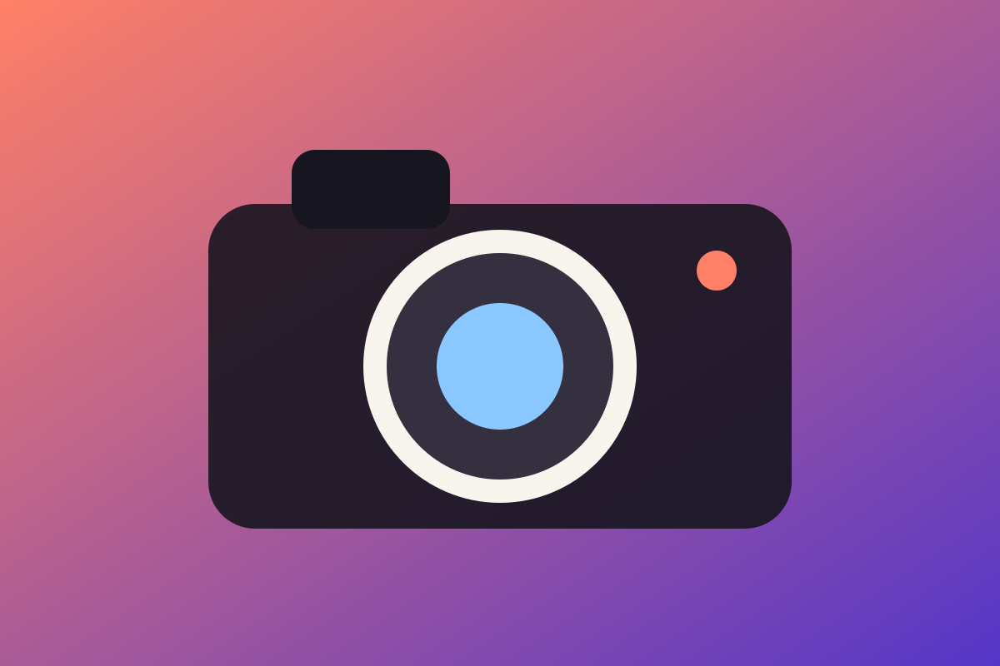
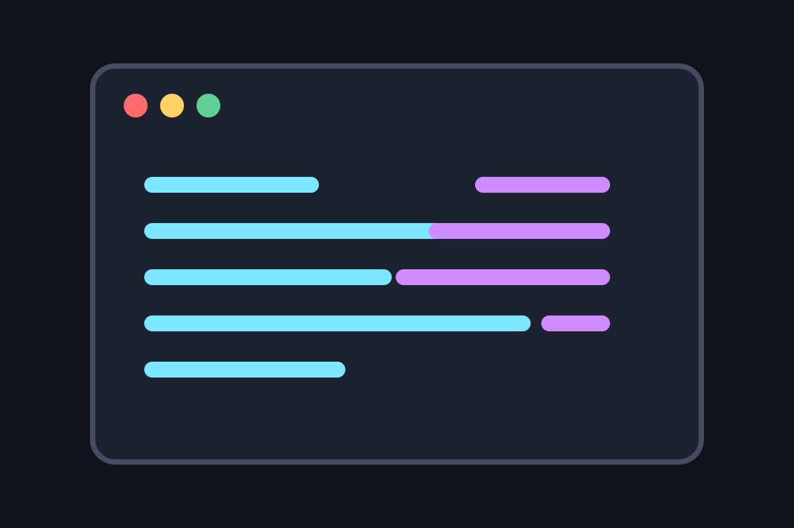
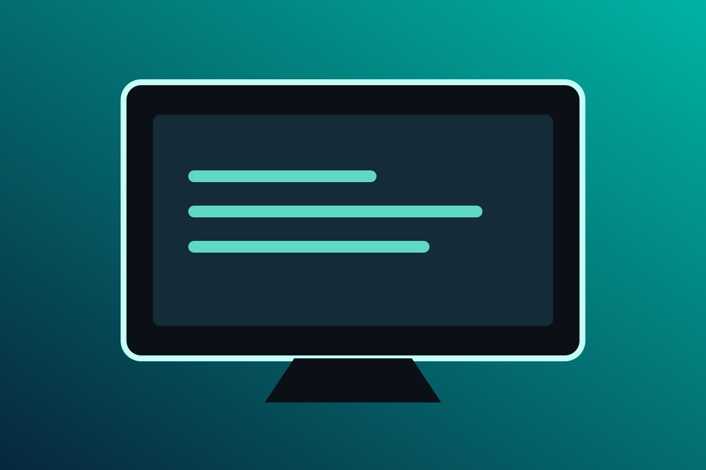
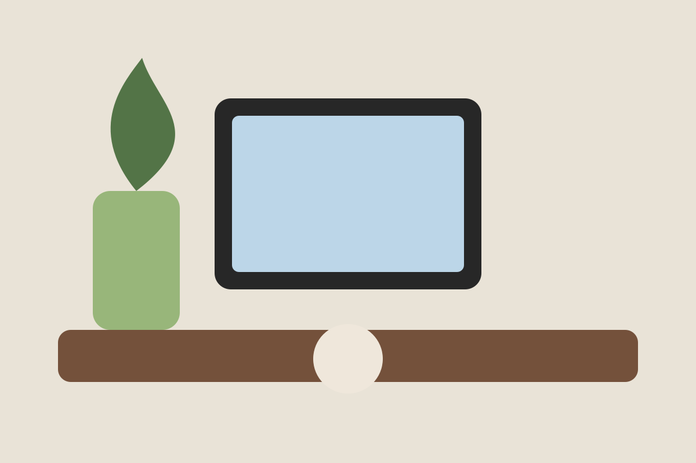

Slot
위아래로 굴러가는 오도미터.
0
33개의 모션 모듈을 한 페이지에서 시연합니다. 각 카드의 옵션을 조정하고, 완성된 설정을 HTML/JS 코드로 가져가세요.
숫자 값을 표현하는 다섯 가지 모드입니다. Pop은 카운트업 없이 완성된 숫자가 순서대로 정착합니다.
위아래로 굴러가는 오도미터.
실제 값이 0부터 목표값까지 증가.
세로 이동 없이 0–9 글리프만 교체.
완성된 숫자가 큰 상태로 나타나 순서대로 정착합니다. 정착 기준(상/중/하)은 옵션.
전광판처럼 숫자가 반으로 접히며 넘어갑니다. 타일 배경은 옵션.
타일 없이 글자만 접히는 미니멀 플립.
전체 화면 로딩 연출입니다. 실제 진행 소스(수동·리소스·Promise·fetch)를 연결할 수 있고, 모든 비주얼은 mk-loader-* 클래스와 --mk-loader-color 변수로 CSS 재스타일이 가능하며 renderUI 훅으로 UI 전체를 교체할 수 있습니다.
이미지 리소스가 로드되는 동안 재생되는 전환 효과입니다. 애니메이션 이미지(GIF·WebP·APNG)의 재생도 유지됩니다.
Pixel Mosaic 엔진. 요소 크기에서 자동으로 픽셀 단계를 만들고 균등 시간으로 해상도가 올라갑니다. 애니메이션 이미지도 재생 유지.

명시적인 픽셀 블록 크기 배열(px)과 단계별 시간.

블러+미세 노이즈 상태에서 위→아래로 스캔되며 선명해짐. 사각 모자이크 없음.

방향성 없이 전체 노이즈와 블러가 점차 사라지며 원본이 선명해짐.

Blur-up과 달리 이미지가 아닌 shimmer UI placeholder. 최소 1.2초 표시.
그라디언트 이동 대신 밝기가 반복되는 placeholder.
실제 이미지 레이어가 흐린 상태에서 선명해지는 이미지 전환.
슬라이스가 어긋나고 블랙아웃이 번쩍이다 정착하는 로드 연출.
인화지가 현상되듯 과노출 상태에서 서서히 색이 차오릅니다.
컨테이너보다 긴 텍스트를 다루는 여덟 가지 모드입니다. 이동·전환·대기 타이밍을 모두 옵션으로 제어할 수 있습니다.
같은 제목이 이어지는 연속 marquee.
끝에 도착한 뒤 실제로 반대 방향으로 돌아옴.
끝에서 mask-out → 숨은 상태로 시작점 이동 → mask-in. 뒤로 이동하지 않음.
한 번 이동하고 마지막에 정지.
페이지 단위 텍스트가 지정한 방향의 마스크로 교체됩니다.
페이지 단위 텍스트가 전광판처럼 위/아래로 플립되며 교체됩니다.
가로 이동(마퀴) 없이 동작합니다 — 첫 구간이 잠시 표시된 뒤, 나머지 구간들이 순서대로 세로 롤링으로만 교체됩니다.
글자들이 노이즈처럼 흩어졌다가 다음 구간으로 재조립됩니다.
목록 아이템이 세로로 순환합니다. div·span 등 HTML 마크업 아이템을 그대로 지원합니다.
포인터를 따라오는 광원과 3D 틸트입니다. 표면 반사·외곽 광선·할로를 조합할 수 있습니다.
Glow 160px · Tilt 7/11°
Glow 90px · Sensitivity 1.45
표면 반사와 외곽 광택을 각각 켜고 색상·감도를 조절합니다.
카드 바깥으로 새어 나오는 회전 conic 글로우 — 오리지널 효과 복원.
외곽선을 따라 흐르는 그라디언트 광선 — 오리지널 보더 글로우.
포인터와 입력에 반응하는 피드백 모듈 — Magnetic, Ripple, Vibration, Mouse Parallax, Compass.
클릭 지점에서 원이 퍼지는 Material 스타일.
탭하면 이름에 맞는 진동 패턴이 재생됩니다(안드로이드 크롬 등 지원 기기). 타이밍 조합으로 톡톡·드르륵 같은 질감을 만듭니다.
바늘이 포인터를 조준해 회전합니다. compassRange로 X축 매핑 회전도 가능.
타이포그래피 모션 모듈입니다. 모든 카드는 Replay로 첫 프레임부터 다시 재생할 수 있습니다.
글자가 3D로 회전하며 등장합니다. flip·scale·blur 선택 가능.
문장이 글자 단위로 교체됩니다 — 슬라이드 업 + 페이드 아웃, 스태거 입장.
caret(|) 표시 여부와 한글 자음·모음 조합 타이핑을 옵션으로 선택합니다.
slide-up · blur · dissolve(노이즈) · shimmer 등.
글자가 순서대로 나타나며 랜덤 글리프로 깜빡인 뒤 확정됩니다. 텍스트에서 자동 생성.
글자마다 불규칙하게 점멸하며 켜집니다. flickerLoop로 상시 잔플리커 유지.
세 겹의 색상 분리 레이어와 간헐적 슬라이스 버스트.
콘텐츠가 뷰포트에 들어올 때 실행되는 등장 모듈입니다. 방향·마스크·시계 채움 등 프리셋을 제공합니다.
Curtain / split / circle / wipe / blinds / diagonal / fade — 방향·색·스태거 옵션.
시계 바늘이 돌 듯 원형 마스크가 채워지며 콘텐츠가 드러납니다.
모션을 강제하지 않고 진입 시 원하는 CSS class만 on/off.
스크롤 방향·속도·진행률에 반응하는 모듈들입니다. 핀 고정, 가로 스크롤, 이미지 시퀀스를 포함합니다.
반복되는 작업과 정보 단절.
흐름을 자동화하고 인터랙션을 모듈화.
재사용 가능한 MotionKit.
콘텐츠가 고정된 화면 안으로 등장합니다.
이전 항목은 뒤로 물러나며 흐려집니다.
스크롤 진행률로 전체 시퀀스를 제어합니다.
ScrollTrigger fallback 또는 CSS animation timeline에 연결.
enableSmooth(), disableSmooth(), toggleSmooth(), scrollTo()
미디어 뷰어와 주변광, 슬라이더, 인터랙티브 마스크 모듈입니다. 하나의 미디어에 여러 모듈을 조합할 수 있습니다.
전체 화면 그룹 뷰어 — 캡션·메타데이터, 확대·이동·미니맵, 커스텀 UI 훅.
단일 transform 경로로 드래그·키보드·버튼 이동이 중복 실행되지 않습니다.
세 모듈을 한 이미지에 조합해도 애니메이션 재생이 유지됩니다.
같은 구도의 두 이미지 — 포인터가 지나간 곳만 브러시 마스크로 두 번째 이미지가 드러납니다. 잔상 유지(persist)·치유 속도·퍼짐·블러 모두 옵션.
로딩과 무관한 상시 효과 — 색수차·슬라이스·스캔라인 버스트가 랜덤 간격으로 발생합니다(hover 트리거 옵션).
재생 프레임을 저해상도로 샘플링해 미디어 주변광을 만듭니다.
11종 커서 프리셋입니다. 영역 단위로 적용할 수 있고, 터치 기기에서는 자동으로 비활성화됩니다.
점은 즉시, 링은 탄성으로 따라옵니다. 호버 시 링은 유지되고 안쪽 점만 커집니다.
커서 주위를 도는 원형 텍스트. 호버 시 중앙 점만 확대됩니다.
글자들이 궤도를 돕니다.
탄성 꼬리가 커서를 따라옵니다.
이동 궤적에 별 파티클이 흩날립니다.
글자들이 사슬처럼 이어 따라옵니다.
화면 전체 십자선 + 중심 점.
클릭 지점에서 1회 재생. 스프라이트는 정사각 프레임을 가로로 이어붙인 시트(예: 96×96 8프레임 = 768×96)이며 clickSpriteWidth/Height/Frames로 어떤 크기든 지정합니다. GIF/APNG는 clickImage. 터치 기기에서도 동작.
포인터 위치에 작게 표시되는 + 크로스.
배포 계약에 고정된 33개 공개 모듈입니다.
동일 출처 내비게이션을 fetch/replace로 전환하는 모듈입니다. 이 데모의 해시 링크는 제외 처리되어 있습니다.
Excluded hash link